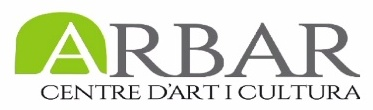

AA+AA (Accions artístiques a Arbar) 2017
Vídeo: Cultural Rizoma - Arbar
Carlos Pina va començar l'acció "L’ordre (no) natural de les coses" de la sèrie No-body aclamant les següents sentències “Els pobles es buiden. Estan fent fora a la gent de les seves cases, estan fent fora a la gent de les seves ciutats, estan fent fora a la gent dels seus països, estan fent fora a la gent dels seus mons... morts en vida”. Així, en relació amb aquestes premisses de desallotjament, immigració i pèrdua d’identitat, és a dir, sobre l’esvaniment de la naturalitat que se suposa a les coses, va escriure amb un pintallavis vermell la paraula TIME sobre l’escorça del tronc de l’arbre en sentit horitzontal, probablement per no seguir el recorregut ascendent de la saba que alimenta l’arbre. Va utilitzar l’arbre per parlar de la vida, metàfora de l’ordre natural que tothom espera que es desenvolupi en el transcurs del camí vital, però malauradament hi ha situacions imprevisibles que canvien de manera violenta i radical aquest transcórrer. Per parlar, justament d’aquest imponderable, va xafar amb el taló de la bota dues ampolles verdes de vi buides i amb els vidres va dibuixar al terra la paraula OF i, després amb el bisturí va escriure al damunt de la seva panxa THE END. Si les paraules es llegeixen seguint l’ordre de l’acció apareix l’expressió The end of time o Time of the end. El missatge d’aquestes paraules es podia llegir des de diversos punts de vista, un seria un final que marca l’inici, i un altre, l’inici del final d’un llarg procés de dolor i resistència.
Marta Pol i Rigau
